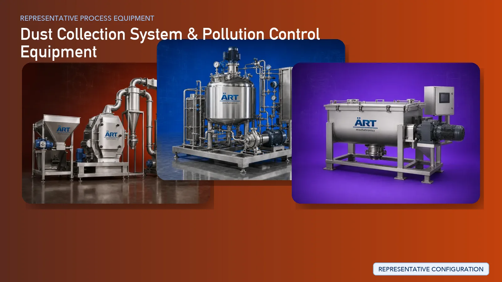

Industrial Dust Collection & Pollution Control Systems (Dust Collector, Wet Scrubber & De-Dusting Solutions)
Industrial dust collection and pollution control systems are essential across almost every manufacturing sector to ensure clean air, safe working environments, and compliance with environmental regulations.

About Dust Collection System & Pollution Control Equipment processing
Industries such as food processing, tobacco, spices, grains, dairy powder, pharma, steel, cement, chemical, plastic, paint, and more generate significant dust, fumes, and airborne particles during production.
ART Mechatronics provides complete turnkey solutions for industrial dust collection and pollution control systems, offering advanced equipment such as bag house dust collectors, cartridge filters, cyclone separators, wet scrubbers, and centralized de-dusting systems designed for high efficiency, minimal maintenance, and long-term reliability.
Complete Dust Collection Process Flow
Dust is generated at multiple stages such as:
Dust is captured at the source using suction systems. Systems Used:
Ensures:
- Maximum dust capture efficiency
Dust-laden air is transported through ducts. Equipment:
Dust particles are separated from air.
Best for:
- Heavy dust load
- Cartridge Dust Collector
- Fine filtration using cartridges
Best for:
- Fine powder industries
- Cyclone Separator
- Uses centrifugal force
Pre-separation of heavy particles
Used for removing gases, fumes, and sticky particles. Systems Used:
Ensures:
- Gas absorption
- Air purification
Collected dust is discharged safely. Systems Used:
Clean air is released back into environment.
Ensures compliance with emission norms.
Types of Systems Offered
Dust Collection Systems
Pollution Control Systems
De-Dusting Systems
- Centralized De-Dusting Systems
- Point Source Extraction Systems
Equipment & Components Supplied
- Bag House Dust Collectors
- Cartridge Dust Collectors
- Cyclone Separators
- Wet Scrubbers
- Industrial Blowers & Fans
- Ducting Systems
- Rotary Airlock Valves
- Hoppers & Collection Systems
- Control Panels & Automation
Industries Served
🍃 Food & Agro Industries
- Tobacco, Spices, Flour Mills, Rice Mills
- Feed, Coffee, Snacks, Dates
- Bakery, Dairy Powder, Pulses
💊 Pharma & Fine Powders
- Pharmaceutical plants
- Nutraceuticals
- Powder processing
🏭 Metal & Heavy Industries
- Steel, Iron, Aluminum
- Fabrication Units
- Foundries & Casting
- Shot Blasting & Sand Blasting
🏗️ Construction & Minerals
- Cement Plants
- RMC & Mortar Plants
- Sand & Stone Processing
- Marble, Granite, Tiles
- Fly Ash, Gypsum, Minerals
⚗️ Chemical & Industrial Processing
- Chemicals & Detergents
- Paint, Ink, Pigment
- Powder Coating
🔌 Advanced Manufacturing
- Cable & Wire Industry
- Battery & Lithium Cell Plants
- Plastic & Rubber Industry
- Textile & Paper Industry
Turnkey Pollution Control Solutions
ART Mechatronics offers complete turnkey solutions for dust collection and pollution control, including:
- Dust extraction system design
- Ducting layout and engineering
- Equipment selection and sizing
- Installation & commissioning
- Automation & control integration
- After-sales service and AMC
We customize solutions based on:
- Dust type (fine, coarse, sticky, hazardous)
- Airflow requirements (CFM)
- Industry standards
- Space availability
Why Choose Art Mechatronics
- Expertise across multiple industries
- High-efficiency dust filtration systems
- Energy-efficient designs
- Compliance with environmental norms
- Robust and low-maintenance equipment
- Custom-built solutions
Machinery in a Dust Collection System & Pollution Control Equipment plant
Where it's used
Get pricing & specs for the Dust Collection System & Pollution Control Equipment plant
Share the product, target capacity, current process and plant location. These details help our engineers discuss the right machine or line configuration.
One partner, from design to start-up
ART Mechatronics designs, manufactures, installs and commissions your Dust Collection System & Pollution Control Equipment solution with regional presence in India, UAE and Thailand.